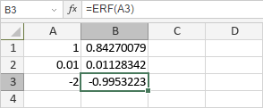

ERF funkcija
ERF funkcija je jedna od inženjerskih funkcija. Koristi se za izračunavanje funkcije greške integrisane između zadate donje i gornje granice.
Sintaksa
ERF(lower_limit, [upper_limit])
ERF funkcija ima sledeće argumente:
| Argument | Opis |
|---|---|
| lower_limit | Donja granica integracije. |
| upper_limit | Gornja granica integracije. Ovo je opcion argument. Ako se izostavi, funkcija će izračunati funkciju greške integrisanu između 0 i lower_limit. |
Napomene
Kako primeniti ERF funkciju.
Primeri
Slika ispod prikazuje rezultat koji vraća ERF funkcija.
